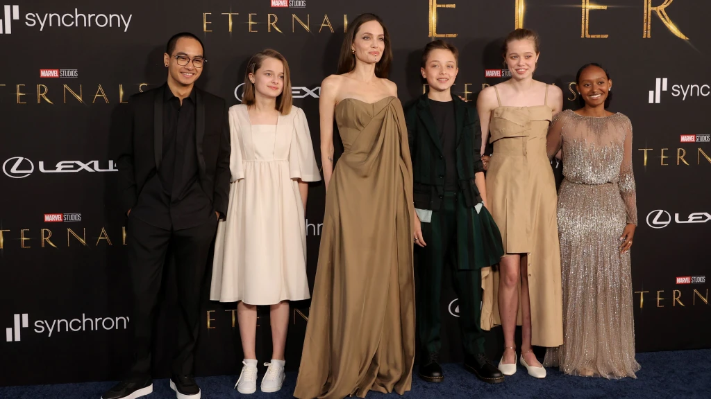

Documento revela com detalhes um incidente com o casal durante uma viagem de avião a Los Angeles; eles se separaram logo em seguida
Brad Pitt e Angelina Jolie na estreia do filme "A Árvore da Vida"em Los Angeles, em 2011
Angelina Jolie acusou Brad Pitt de machucá-la e abusar verbalmente de seus filhos durante um encontro acalorado a bordo de um jato particular em 2016, de acordo com um relatório do FBI
No relatório, que foi divulgado para ambas as partes como resultado de uma solicitação de liberdade de informação ou ato, a atriz disse aos agentes que, enquanto viajava de volta para a Califórnia com Pitt e seus seis filhos após férias de duas semanas, seu então marido estava bebendo quando ele disse a ela para acompanhá-lo até a parte de trás do avião depois que ele teve uma interação tensa com um de seus filhos.
O nome de Pitt é redigido no relatório, mas ela se refere a marido várias vezes – ele era casado com Jolie na época do suposto incidente.
Uma vez lá, Angelina disse, eles estavam em um banheiro que tinha uma porta de privacidade que não permitia que seus filhos os vissem, e ela alegou que Pitt “a agarrou pela cabeça”, “a agarrou pelos ombros”, sacudiu-a, empurrou-a na parede do banheiro e estava gritando várias coisas com ela, incluindo “‘Você está f*** essa família'”, de acordo com o relatório.
Pitt não foi preso ou acusado em conexão com o incidente depois que o FBI concluiu uma investigação em 2016.
“Em resposta às alegações feitas após um voo dentro da jurisdição de aeronaves especiais dos Estados Unidos que pousou em Los Angeles transportando o Sr. Brad Pitt e seus filhos, o FBI realizou uma revisão das circunstâncias e não prosseguirá com a investigação. Nenhuma acusação foi apresentada”, disse a porta-voz do FBI, Laura Eimiller
“Todas as partes têm essa informação há quase seis anos e foi usada em processos judiciais anteriores. Não há nada de novo aqui e não serve para nada além de ser um golpe de mídia destinado a gerar mais dor”, disse uma fonte próxima a Pitt sobre o relatório vir à tona agora.
De acordo com o relatório do FBI, Jolie disse aos investigadores que dois de seus filhos (cujos nomes não são evidentes no relatório, mas que eram menores na época), “estavam do lado de fora chorando e perguntaram ‘Você está bem, mamãe?'”
Pitt supostamente gritou em resposta: “‘Não, mamãe não está bem. Ela está arruinando esta família. Ela é louca'”, afirma o relatório.
De acordo com Jolie, isso levou um de seus filhos a responder: “‘Não é ela, é você, seu p***'”, o que enfureceu Pitt. Angelina alegou que o viu correr em direção a uma das crianças “como se fosse atacar”, e nesse momento disse que segurou Pitt com um estrangulamento, e ele tentou se soltar jogando-se para trás, empurrando-a para as cadeiras atrás deles, diz o relatório.
Angelina Jolie levou seus filhos para a pré-estreia de seu primeiro filme com a Marvel / Emma McIntyre/WireImage
Jolie alegou no relatório que sofreu lesões nas costas e no cotovelo e compartilhou uma foto da lesão no cotovelo com o FBI.
Fotocópias em preto e branco das fotos estão incluídas no relatório, bem como páginas manuscritas fornecidas por Jolie, supostamente de seus filhos, contendo descrições do suposto incidente. As páginas manuscritas são substancialmente redigidas.
Jolie também disse na reportagem que Pitt continuou bebendo durante a viagem, e depois despejou cerveja nela. Depois que chegaram a Los Angeles, a dupla teve uma briga física e ela disse que Pitt impediu que ela e as crianças saíssem do avião por 20 minutos.
Além de suas costas e cotovelo, o relatório afirma que Jolie disse que também sofreu uma queimadura na mão esquerda. Uma foto da ferida está incluída no relatório. Ela foi questionada sobre um arranhão relatado em Pitt, e Jolie disse no relatório que poderia ter sido causado por ela.
De acordo com o relatório, depois de analisar uma declaração de causa provável relacionada ao incidente, um representante da Procuradoria dos EUA “discutiu os méritos desta investigação com o agente do caso [FBI]”.
“Foi acordado por todas as partes que as acusações criminais neste caso não seriam feitas devido a vários fatores”, diz o relatório.
Entramos em contato com a Procuradoria dos EUA para comentar.
Quando contatado por e-mail, um porta-voz do FBI respondeu: “Nenhuma acusação foi feita em conexão com este assunto e seria inapropriado comentar mais”.
Jolie pediu o divórcio logo após o incidente e, embora a dissolução de seu casamento tenha sido concedida em 2019, sua batalha legal sobre propriedade e custódia de seus filhos menores continuou ao longo dos anos.
Em 2020, Jolie disse à “Vogue India” que se separou de Pitt por causa de seus filhos.
“Eu me separei para o bem estar da minha família”, disse ela. “Foi a decisão certa. Continuo me concentrando na cura deles.”
Pitt disse à “GQ” em 2017 que parou de beber depois de ter “bebido” demais no ano passado.
Em uma entrevista de junho de 2022 à “GQ” britânica, ele falou sobre encontrar mais paz recentemente.
“Sempre me senti muito sozinho na minha vida”, disse ele à publicação. “Sozinho crescendo quando criança, sozinho mesmo aqui, e sentimento que tive até recentemente, quando fui abraçado pelos meus amigos e familiares”.